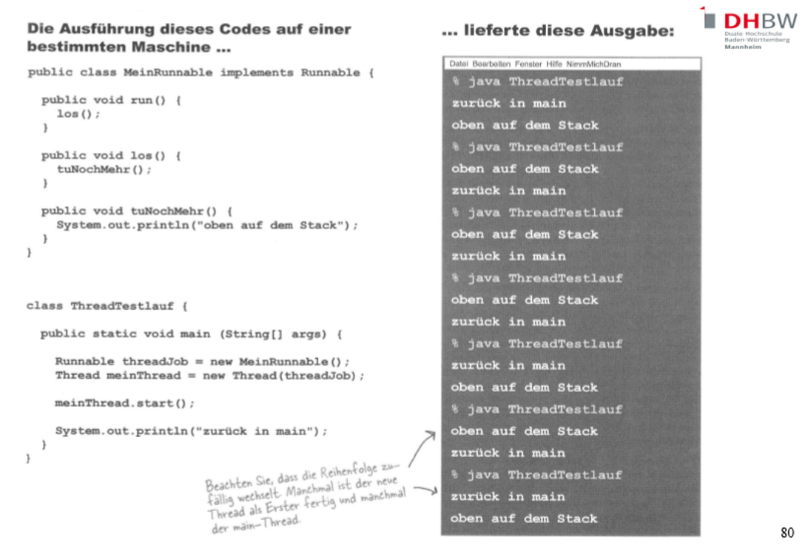

Vorlesung 3 - Netzwerke
 19.04.2021
19.04.2021
Von Sockets und Threads
Eine neue Woche, eine neue Vorlesung. Die Themen heute waren:
- Grundlagen Wiederholung: Client Server, Sockets und Port Mapping
- Mit Buffered Reader bzw. Print Writer Daten vom/zum Socket und somit von/zu einem Client empfangen/senden
- Aufgabe - Client und Server
- Mehr Dokumentation (ServerSocket und Socket Klasse) 🙄
- Wiederholung zum Thema Multithreading
- Aufgabe - Threading
Alles in Allem sehr viel schon bekanntes, aber auch ein paar neue Inhalte.
Grundlagen Wiederholung: Client Server, Sockets und Port Mapping
Angefangen haben wir mit einer Wiederholung zum Thema Client Server Kommunikation und der angrenzenden Themenbereiche Sockets und Ports.
Da diese Inhalte jedoch bereits in vorangegangenen Vorlesungen (Kommunikationssysteme und Programmierung II) ausführlicher besprochen wurden verzichte ich
an dieser Stelle darauf ins Detail zu gehen.
Zusammengefasst komunizieren Computer über das Netzwerk mit sogenannten Sockets. Diese lauschen oder senden Daten durch sogenannte Ports, die man gut mit Türen
von/zum Netzwerk vergleichen kann.
Mit Buffered Reader bzw. Print Writer Daten vom/zum Socket und somit von/zu einem Client empfangen/senden
Um nun Daten über einen Socket zu lesen/senden haben wir in der Vorlesung einen Buffered Reader bzw. Print Writer verwendet, den wir bereits aus der letzten Woche kannten. Diesen können wir analog zu letzter Woche verwenden mit dem kleinen aber feinen Unterschied, dass wir beispielsweise nicht eine Datei sondern einen socket Input/Output Stream an diesen übergeben.
Aufgabe - Client und Server
Das haben wir im Anschluss direkt genutzt um einen "Tipp des Tages"-Server und einen entsprechenden Client zu schreiben.
Fangen wir mit dem Server an. Der Aufbau ist relativ simpel. Unsere Tipps befinden sich in einem String Array tippListe.
In der main Methode erstellen wir eine neue Instanz unseres Servers und rufen dessen los Methode auf. Diese erstellt einen neuen ServerSocket am Port
4242 und wechselt dann in eine unendliche while Schleife. Dort wird bei jedem neuen Verbindungsversuch eines Client erst dieser Akzeptiert, dann ein PrintWriter
erstellt dessen Output der Socket Output Stream ist und dann eine zufällige Anzahl von Tipps gesendet.
Das "+ 3" bei der Generierung der zufallszahl (in der los Methode) soll ledigich dafür sorgen, dass mindestens 3 Tipps gesendet werden.
package TippDesTages;
import java.io.IOException;
import java.io.PrintWriter;
import java.net.ServerSocket;
import java.net.Socket;
public class TippDesTagesServer {
String[] tippListe = {"Essen Sie weniger Gummibärchen", "Mehr Sport machen", "Mehr raus gehen", "Mehr für die Uni lernen"};
public static void main(String[] args){
TippDesTagesServer server = new TippDesTagesServer();
server.los();
}
public void los() {
try {
ServerSocket serverSock = new ServerSocket(4242);
while(true) {
Socket sock = serverSock.accept();
PrintWriter writer = new PrintWriter(sock.getOutputStream());
int zufallszahl = (int) ((Math.random() * 10) + 3);
for(int i = zufallszahl; i > 0; i--){
String tipp = getTipp();
writer.println(tipp);
writer.flush();
}
}
} catch (IOException ex) {
ex.printStackTrace();
}
} // los() schließen
private String getTipp() {
int zufallszahl = (int) (Math.random() * tippListe.length);
return tippListe[zufallszahl];
}
}
Wir haben nun einen Server. Jetzt fehlt nur noch ein Gegenstück - der Client. Dieser ist - genau wie der Server - sehr simpel aufgebaut.
Wir erzeugen in der Main Methode erst eine neue Client Instanz und starten die los Methode dieser. Dort wird ein neuer Socket erstellt der ebenfalls den Port 4242 verwendet. Außerdem wird ein InputStreamReader und ein "darauf aufbauender" BufferedReader erzeugt welche mit dem InputStream des Sockets "verbunden" werden.
Abschließend wir auch hier eine unendliche while Schleife gestartet. Hier werden allerdings die erhaltene Nachrichten direkt in die Konsole geschrieben.
package TippDesTages;
import java.io.BufferedReader;
import java.io.IOException;
import java.io.InputStreamReader;
import java.net.Socket;
public class TippDesTagesClient {
public static void main(String[] args){
TippDesTagesClient client = new TippDesTagesClient();
client.los();
}
public void los(){
try{
Socket s = new Socket("127.0.0.1", 4242);
InputStreamReader streamReader = new InputStreamReader(s.getInputStream());
BufferedReader reader = new BufferedReader(streamReader);
while(true){
String tipp = reader.readLine();
System.out.println("Tipp des Tages: " + tipp);
}
} catch(IOException ex) {
ex.printStackTrace();
}
}
}
Wenn wir nun zuerst den Server und danach den Client starten ergibt sich das folgende Bild:
Mehr Dokumentation (ServerSocket und Socket Klasse) 🙄
Nun folgte eine weitere Episode von "wir lesen eine Liste von verfügbaren Methoden". Für wie sinnvoll ich dies halte habe ich letzte Woche bereits geschildert. Für Interessierte packe ich dieses Mal allerdings den Link zur offiziellen Java Dokumentation dazu.
Wiederholung zum Thema Multithreading
So ungern ich es immer wieder schreibe, aber auch dieses Thema stellt leider lediglich eine Wiederholung bereits vorangegangener Vorlesungen dar (Betriebssysteme und Programmierung II). In beiden Vorlesungen haben wir zudem mit Java Beispielen gearbeitet 😬.
Das einzig erfrischend Neue war das kurze Praxisbeispiel am Ende der Vorlesung.
Aufgabe - Threading
Nun konnte man noch einmal etwas schreiben. Und zwar sollten zwei Klassen geschrieben werden. Eine "ausführende" und eine die das Interface Runnable implementiert. Die erstgenannte sollte nun die zweite als Thread ausführen. Beide schrieben Texte in die Konsole und beobachtet werden sollte die Reihenfolge der Ausführung, also wie der Scheduler die Ausführung priorisiert.
Anschließend sollten wir einen kurzen Delay einbauen, der dafür sorgen sollte, dass sich die Reihenfolge der Ausführung umkehrt. Das Ergebnis sieht man unten.
package Threading;
public class MeinRunnable implements Runnable {
public void run() {
los();
}
public void los() {
tuNochMehr();
}
public void tuNochMehr(){
System.out.println("oben auf dem Stack");
}
}
class ThreadTestlauf {
public static void main(String[] args) {
Runnable threadJob = new MeinRunnable();
Thread meinThread = new Thread(threadJob);
meinThread.start();
/*
try{
Thread.sleep(100);
} catch(Exception ex){
ex.printStackTrace();
}
*/
System.out.println("zurück in main");
}
}
Und damit endete diese Vorlesung. Dann bis nächste Woche.